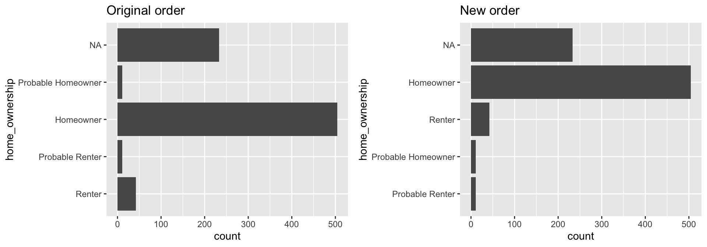
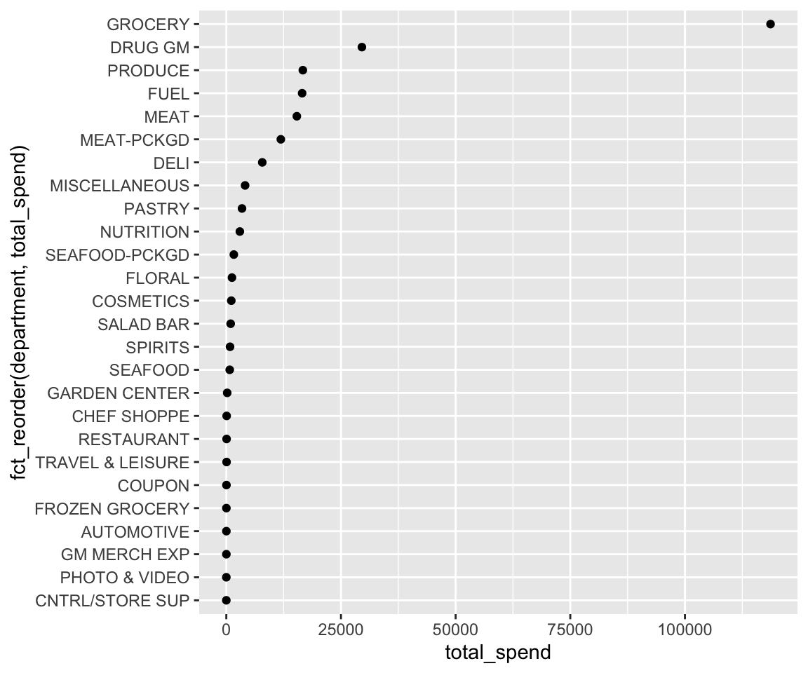
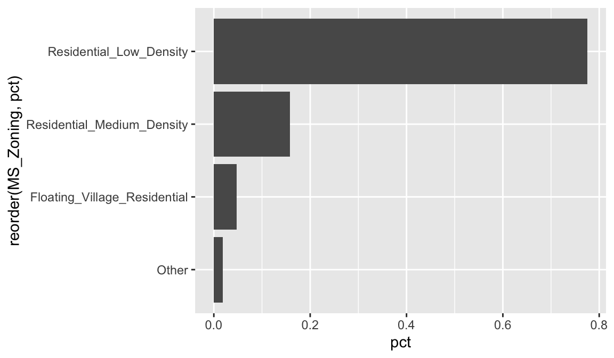
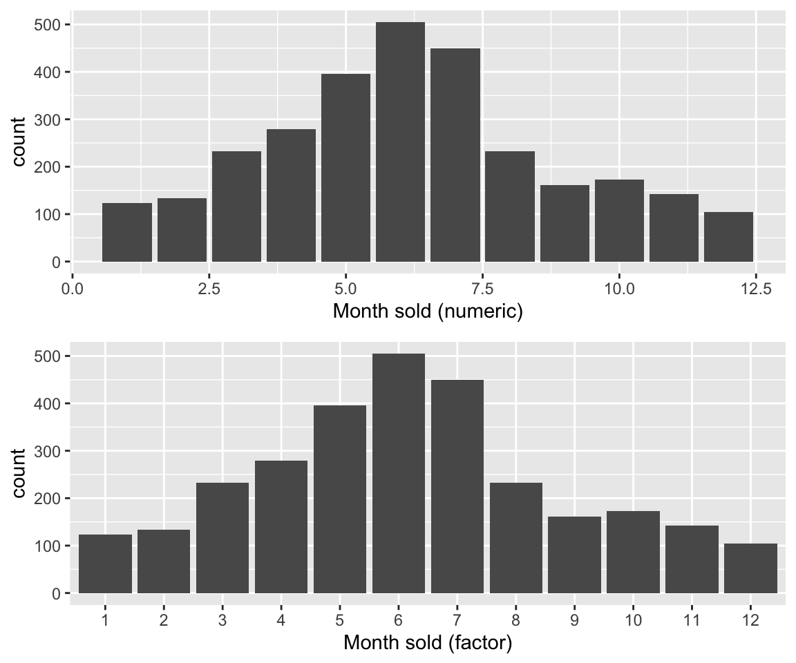
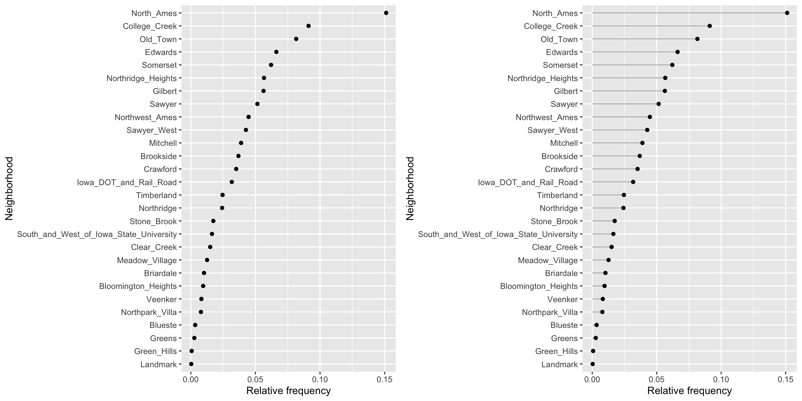
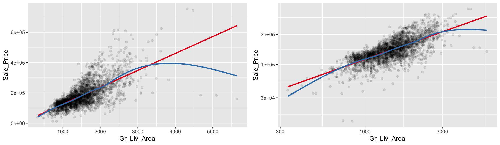

20 Lesson 5c: Visual data exploration
Data visualization is a critical tool in the data analysis process. Visualization tasks can range from generating fundamental distribution plots to understanding the interplay of complex influential variables in machine learning algorithms. In lesson 5a we learned how to make plots with ggplot2. In this lesson we build upon this skill and focus on the use of visualization for initial data exploration.
Visual data exploration is a mandatory initial step whether or not more formal analysis follows. When combined with descriptive statistics, visualization provides an effective way to identify summaries, structure, relationships, differences, and abnormalities in the data. Often times no elaborate analysis is necessary as all the important conclusions required for a decision are evident from simple visual examination of the data. Other times, data exploration will be used to help guide the data cleaning, feature selection, and sampling process.
Regardless, visual data exploration is about investigating the characteristics of your data set. To do this, we typically create numerous plots in an interactive fashion. This lesson will show you how to create plots that answer some of the fundamental questions we typically have of our data.
20.1 Learning objectives
By the end of this lesson you will be able to create and modify plots to understand:
- Single variable distributions.
- Relationships between two or more variables.
- How missing data behaves throughout a data set.
20.2 Prerequisites
We’ll illustrate the key ideas by primarily focusing on refined Ames housing data provided by the AmesHousing package. We’ll use tidyverse to provide some basic data manipulation capabilities along with ggplot2 for plotting.
# main package required
library(tidyverse)
# data used
ames <- AmesHousing::make_ames()
ames
## # A tibble: 2,930 × 81
## MS_SubClass MS_Zoning Lot_Frontage Lot_Area Street Alley Lot_Shape Land_Contour Utilities
## <fct> <fct> <dbl> <int> <fct> <fct> <fct> <fct> <fct>
## 1 One_Story_1946_… Resident… 141 31770 Pave No_A… Slightly… Lvl AllPub
## 2 One_Story_1946_… Resident… 80 11622 Pave No_A… Regular Lvl AllPub
## 3 One_Story_1946_… Resident… 81 14267 Pave No_A… Slightly… Lvl AllPub
## 4 One_Story_1946_… Resident… 93 11160 Pave No_A… Regular Lvl AllPub
## 5 Two_Story_1946_… Resident… 74 13830 Pave No_A… Slightly… Lvl AllPub
## 6 Two_Story_1946_… Resident… 78 9978 Pave No_A… Slightly… Lvl AllPub
## 7 One_Story_PUD_1… Resident… 41 4920 Pave No_A… Regular Lvl AllPub
## 8 One_Story_PUD_1… Resident… 43 5005 Pave No_A… Slightly… HLS AllPub
## 9 One_Story_PUD_1… Resident… 39 5389 Pave No_A… Slightly… Lvl AllPub
## 10 Two_Story_1946_… Resident… 60 7500 Pave No_A… Regular Lvl AllPub
## # … with 2,920 more rows, and 72 more variables: Lot_Config <fct>, Land_Slope <fct>,
## # Neighborhood <fct>, Condition_1 <fct>, Condition_2 <fct>, Bldg_Type <fct>,
## # House_Style <fct>, Overall_Qual <fct>, Overall_Cond <fct>, Year_Built <int>,
## # Year_Remod_Add <int>, Roof_Style <fct>, Roof_Matl <fct>, Exterior_1st <fct>,
## # Exterior_2nd <fct>, Mas_Vnr_Type <fct>, Mas_Vnr_Area <dbl>, Exter_Qual <fct>,
## # Exter_Cond <fct>, Foundation <fct>, Bsmt_Qual <fct>, Bsmt_Cond <fct>, Bsmt_Exposure <fct>,
## # BsmtFin_Type_1 <fct>, BsmtFin_SF_1 <dbl>, BsmtFin_Type_2 <fct>, BsmtFin_SF_2 <dbl>, …We also demonstrate some useful functions from a few other packages throughout the lesson. To replicate all the code in this lesson you’ll need to install the following additional packages:
pkgs <- c("AmesHousing", "ggridges", "GGally",
"glue","gridExtra", "hexbin", "naniar",
"treemap", "viridis")
install.packages(pkgs)This refined data set has:
glue::glue(
'rows: {dim(ames)[1]}\n',
'columns: {dim(ames)[2]}'
)
## rows: 2930
## columns: 81The glue package is a great tool for combining strings with R expressions!
20.3 Univariate Distributions
Before moving on to more sophisticated visualizations that enable multidimensional investigation, it is important to be able to understand how an individual variable is distributed. Visually understanding the distribution allows us to describe many features of a variable.
A variable is continuous if it can take any of an infinite set of ordered values. There are several different plots that can effectively communicate the different features of continuous variables. Features we are generally interested in include:
- Measures of location
- Measures of spread
- Asymmetry
- Outliers
- Gaps
20.3.1 Histograms
Histograms are often overlooked, yet they are a very efficient means for communicating these features of continuous variables. Formulated by Karl Pearson, histograms display numeric values on the x-axis where the continuous variable is broken into intervals (aka bins) and the the y-axis represents the frequency of observations that fall into that bin. Histograms quickly signal what the most common observations are for the variable being assessed (the higher the bar the more frequent those values are observed in the data); they also signal the shape of your data by illustrating if the observed values cluster towards one end or the other of the distribution.
To get a quick sense of how our home sale prices are distributed across the 2,930 observations in the stores data we can generate a simple histogram by applying ggplot’s geom_histogram() function. This histogram tells us several important features about our variable:
ggplot(ames, aes(x = Sale_Price)) +
geom_histogram() +
scale_x_continuous(labels = scales::dollar)This plot conveys several important features about the distribution of Sale_Price:
- Measures of location: the most common values of
Sale_Priceare around $160K (the median); - Measures of spread:
Sale_Priceranges from near zero to over $700K; - Skewness:
Sale_Priceis skewed right (a common feature of financial data); - Outliers: there appears to be some abnormally large values of
Sale_Price. - Gaps: We see a gap exists between sale price values around $625K and $750K.
Some statistical modeling techniques (i.e. linear regression) are sensitive to outliers and assume that the data are (at least approximately) symmetric. Histograms, as well as some other visualizations we’ll cover, are invaluable tools for identifying there and other potential problems with our data.
By default, geom_histogram() will divide the values of a continuous variable into 30 equally sized bins. Since Sale_Price ranges from $12,789–$755,000, 30 equally sized bins implies a bin width of \(\frac{\left\lfloor{\$755,000 - \$12,789}\right\rfloor}{30} = \$24,740\). So in the above plot, the first bar represents the frequency of Sale_Price in the range of (roughly) \(\left[\$12,500, \ \$37,500\right]\), the second bar represents the frequency of Sale_Price in the range of (roughly) \(\left[\$37,500, \ \$62,300\right]\), and so on.
In geom_histogram(), we can use the binwidth and bins arguments to control the bin width and number of bins, respectively (but only one argument needs to be specified). By adjusting one of these parameters, we can change the crudeness of the histogram estimate of the variable’s density. For instance, in the default histogram, the bin with the largest frequency ranged from $136,000–$161,000; however, as demonstrated below, we can often do better by manually adjusting the bin width.
# Histograms with various bin widths
# Too crude (i.e., under fitting)
p1 <- ggplot(ames, aes(Sale_Price)) +
geom_histogram(binwidth = 100000) +
ggtitle("Bin width = $100,000")
# Less crude
p2 <- ggplot(ames, aes(Sale_Price)) +
geom_histogram(binwidth = 50000) +
ggtitle("Bin width = $50,000")
# Just right?
p3 <- ggplot(ames, aes(Sale_Price)) +
geom_histogram(binwidth = 5000) +
ggtitle("Bin width = $5,000")
# Too flexible (i.e., over fitting)
p4 <- ggplot(ames, aes(Sale_Price)) +
geom_histogram(binwidth = 1000) +
ggtitle("Bin width = $1,000")
# Display plots in a grid
grid.arrange(p1, p2, p3, p4, ncol = 2)The most common value of Sale_Price (i.e., the statistical mode) is $135,000 (this is roughly where the peak of each histogram occurs). R does not have a built-in function for finding the most common value in a set of observations, but we can easily find it using a combination of which.max() and table().
which.max(table(ames$Sale_Price))
## 135000
## 270We can also find the most frequent bin by combining cut_width (cut_interval and cut_number are additional options) with count. We see that the most frequent bin when using increments of $5,000 is $128,000 - $132,000.
ames %>%
count(cut_width(Sale_Price, width = 5000)) %>%
arrange(desc(n))
## # A tibble: 106 × 2
## `cut_width(Sale_Price, width = 5000)` n
## <fct> <int>
## 1 (1.28e+05,1.32e+05] 137
## 2 (1.42e+05,1.48e+05] 130
## 3 (1.32e+05,1.38e+05] 125
## 4 (1.38e+05,1.42e+05] 125
## 5 (1.22e+05,1.28e+05] 118
## 6 (1.52e+05,1.58e+05] 103
## 7 (1.48e+05,1.52e+05] 101
## 8 (1.18e+05,1.22e+05] 99
## 9 (1.58e+05,1.62e+05] 92
## 10 (1.72e+05,1.78e+05] 92
## # … with 96 more rowsWe can assess the applicability of a log transformation by adding scale_x_log() to our ggplot visual. This log transformed histogram provides a couple new insights:
- It appears the log transformation helps our variable meet normality assumptions. More on this in a second.
- It appears there new potential outliers that we did not see earlier. There are several observations where the sale price is very low. In fact, there are 11 observations where the sale price is below $50,000 and 2 that are below $15,000!
ggplot(ames, aes(Sale_Price)) +
geom_histogram(bins = 100) +
scale_x_log10(labels = scales::dollar)
20.3.2 Quantile-quantile plots
Let’s consider the issue of normality. If you really want to look at normality, then Q-Q plots are a great visual to assess. This graph plots the cumulative values we have in our data against the cumulative probability of a particular distribution (the default is a normal distribution). In essence, this plot compares the actual value against the expected value that the score should have in a normal distribution. If the data are normally distributed the plot will display a straight (or nearly straight) line of dots. If the data deviates from normality then the plot will display strong curvature or “snaking.”
Looking at the Q-Q plots below, notice how the normal Q-Q plot for Sale_Price starts to bend up. This indicates that the distribution of Sale_Price has a heavier right tail than expected from a normal distribution (i.e., Sale_Price is more positively skewed than what would be expected from normally distributed data). The normal Q-Q plot for log(Sale_Price) is a bit more well behaved (aside from the two potential outliers and slight downward curvature in the bottom left of the graph).
# non-log transformed
p1 <- ggplot(ames, aes(sample = Sale_Price)) +
stat_qq()
# log transformed
p2 <- ggplot(ames, aes(sample = log(Sale_Price))) +
stat_qq()
gridExtra::grid.arrange(p1, p2, ncol = 2)
Histograms (and kernel density estimates), and Q-Q plots are great at visually summarizing the distribution of a continuous variable; especially a variable with many unique values. Unfortunately, histograms are less suitable for continuous data with few unique values, and are not great at displaying outliers (the same goes for Q-Q plots). Fortunately, a simple display of a few descriptive statistics offers a perfect compliment to histograms; this display is referred to as a box plot.
20.3.3 Box plots
We previously mentioned how we obtained a new insight regarding new potential outliers that we did not see earlier. So far our histogram identified potential outliers at the lower end and upper end of the sale price amount spectrum. Unfortunately histograms are not very good at delineating outliers. Rather, we can use a boxplot which does a better job identifying specific outliers.
Boxplots are an alternative way to illustrate the distribution of a variable and is a concise way to illustrate the standard quantiles and outliers of data. As the below figure indicates, the box itself extends, left to right, from the 1st quartile to the 3rd quartile. This means that it contains the middle half of the data. The line inside the box is positioned at the median. The lines (whiskers) coming out either side of the box extend to 1.5 interquartile ranges (IQRs) from the quartiles. These generally include most of the data outside the box. More distant values, called outliers, are denoted separately by individual points. Now we have a more analytically specific approach to identifying outliers.

Figure 20.1: Information a boxplot provides.
There are two efficient graphs to get an indication of potential outliers in our data. The classic boxplot on the left will identify points beyond the whiskers which are beyond \(1.5 \times IQR\) from the first and third quantile. This illustrates there are several additional observations that we may need to assess as outliers that were not evident in our histogram. However, when looking at a boxplot we lose insight into the shape of the distribution. A violin plot on the right provides us a similar chart as the boxplot but we lose insight into the quantiles of our data and outliers are not plotted (hence the reason I plot geom_point prior to geom_violin). Violin plots will come in handy later when we start to visualize multiple distributions along side each other.
p1 <- ggplot(ames, aes("var", Sale_Price)) +
geom_boxplot(outlier.alpha = .25) +
scale_y_log10(
labels = scales::dollar,
breaks = quantile(ames$Sale_Price)
)
p2 <- ggplot(ames, aes("var", Sale_Price)) +
geom_point() +
geom_violin() +
scale_y_log10(
labels = scales::dollar,
breaks = quantile(ames$Sale_Price)
)
gridExtra::grid.arrange(p1, p2, ncol = 2)The boxplot starts to answer the question of what potential outliers exist in our data. Outliers in data can distort predictions and affect their accuracy. Consequently, its important to understand if outliers are present and, if so, which observations are considered outliers. Boxplots provide a visual assessment of potential outliers while the outliers package provides a number of useful functions to systematically extract these outliers. The most useful function is the scores function, which computes normal, t, chi-squared, IQR and MAD scores of the given data which you can use to find observation(s) that lie beyond a given value.
Here, I use the outliers::score function to extract those observations beyond the whiskers in our boxplot and then use a stem-and-leaf plot to assess them. A stem-and-leaf plot is a special table where each data value is split into a “stem” (the first digit or digits) and a “leaf” (usually the second digit). Since the decimal point is located 5 digits to the right of the “|” the last stem of “7” and and first leaf of “5” means an outlier exists at around $750,000. The first stem of “0” and and third leaf of “3” means an outlier exists at around $30,000. This is a concise way to see approximately where our outliers are. In fact, I can now see that I have several lower end outliers ranging from $11K-$60K and several more upper end outliers ranging from $450K-$760K.
# ID outliers
outliers <- outliers::scores(log(ames$Sale_Price), type = "iqr", lim = 1.5)
# stem plot of outliers
stem(ames$Sale_Price[outliers])
##
## The decimal point is 5 digit(s) to the right of the |
##
## 0 | 1134444445555555666666666666
## 1 |
## 2 |
## 3 |
## 4 | 56666777788899
## 5 | 000445566889
## 6 | 1123
## 7 | 56
# order outlier values
sort(ames$Sale_Price[outliers])
## [1] 12789 13100 34900 35000 35311 37900 39300 40000 44000 45000 46500 50000 50138
## [14] 51689 52000 52500 55000 55000 55000 55993 57625 58500 58500 59000 60000 60000
## [27] 60000 61000 451950 455000 457347 460000 462000 465000 466500 468000 470000 475000 475000
## [40] 479069 485000 492000 500000 500067 501837 535000 538000 545224 552000 555000 556581 582933
## [53] 584500 591587 610000 611657 615000 625000 745000 755000As demonstrated, several plots exist for examining univariate continuous variables. Several examples were provided here but still more exist (i.e. frequency polygon, bean plot, shifted histograms). There is some general advice to follow such as histograms being poor for small data sets, dot plots being poor for large data sets, histograms being poor for identifying outlier cut-offs, box plots being good for outliers but obscuring multimodality. Consequently, it is important to draw a variety of plots. Moreover, it is important to adjust parameters within plots (i.e. bin width, axis transformation for skewed data) to get a comprehensive picture of the variable of concern.
In practice, it is often helpful (encouraged, in fact) to look at many types of graphics for a particular variable. For continuous variables, it is often useful to look at histograms, box plots, Q-Q plots, and a number of other graphics (depending on the situation). We can combine multiple plots to display a wealth of important information about continuous variables, especially as it relates to typical analytic tasks (e.g., density, correlation, outliers, etc.)
p1 <- ggplot(ames, aes(x = Sale_Price)) +
geom_histogram(aes(y = ..density..), size = 1.5) +
geom_density(color = "purple2") +
scale_x_log10(labels = scales::dollar) +
ggtitle("Illustrates a skewed distribution")
p2 <- ggplot(ames, aes(x = "", y = Sale_Price)) +
geom_jitter(alpha = 0.1) +
geom_boxplot() +
coord_flip() +
scale_y_log10(labels = scales::dollar) +
ggtitle("Illustrates a outliers")
p3 <- ggplot(ames, aes(sample = Sale_Price)) +
geom_qq(alpha = 0.5) +
ggtitle("Illustrates whether we can assume normality")
ames$Index <- seq_len(nrow(ames)) # add row number as a new column
p4 <- ggplot(ames, aes(x = Index, y = Sale_Price)) +
geom_line(alpha = 0.5) +
ggtitle("Illustrates pattern based on index")
grid.arrange(p1, p2, p3, p4, ncol = 2)20.3.4 Categorical variables
A categorical variable is a variable that can take on one of a limited, and usually fixed, number of possible values, assigning each individual or other unit of observation to a particular group or nominal category on the basis of some qualitative property (i.e. gender, grade, manufacturer). There are several different features we are generally interested in with categorical variables (i.e. counts, proportions, imbalances, mislabeled levels). There are a few different plots that can effectively communicate these features of categorical variables.
20.3.5 Bar charts
In a typical bar chart, each bar represents a different category (e.g. male or female) and the height of each bar represents the frequency (or proportion) of observations within each category. By default, the x-axis typically represents categories; however, as we will see, it is often useful to “flip” bar charts horizontally for readability, especially when the number of categories is large. We have already seen bar charts in the form of a histogram—the difference there being that the bars (i.e., categories) were created by binning a numeric variable into (roughly) equal sized buckets.
If we look at the general zoning classification (MS_Zoning) for each property sold in our ames data set, we see that the majority of all properties fall within one category. We can use ggplot2’s geom_bar() function to construct simple bar charts. By default, geom_bar() simply counts the observations within each category and displays them in a vertical bar chart.
ggplot(ames, aes(MS_Zoning)) +
geom_bar() +
theme(axis.text.x = element_text(angle = 55, hjust = 1))MS_Zoning is an example of a nominal categorical variable; a categorical variable for which there is no logical ordering of the categories (as opposed to low, medium, and high, for example). To get better clarity of nominal variables we can make some refinements. We can also draw bar charts manually using geom_col(). To do this, we first need to compute the length of each bar. For frequencies, we can use dplyr::count() to tally the number of observations within each category. We can then use dplyr::mutate() to convert frequencies to proportions. With this approach, we can use reorder() to easily reorder the bar categories from most frequent to least (or vice versa). For readability, we can also apply coord_flip() to rotate the bar chart (or any ggplot2 figure) on its side. These refinements are demonstrated in the code chunk below.
# Bar chart of frequencies
p1 <- ames %>%
count(MS_Zoning) %>%
ggplot(aes(reorder(MS_Zoning, n), n)) +
geom_col() +
coord_flip() +
labs(x = "MS_Zoning", y = "Frequency") +
ggtitle("Total count")
# Bar chart of proportions
p2 <- ames %>%
count(MS_Zoning) %>%
mutate(pct = n / sum(n)) %>% # convert to proportions
ggplot(aes(reorder(MS_Zoning, pct), pct)) +
geom_col() +
coord_flip() + # now x becomes y
labs(x = "MS_Zoning", y = "Relative frequency") +
scale_y_continuous(labels = scales::percent) +
ggtitle("Percent of whole")
# Dispay both plots side by side
grid.arrange(p1, p2, ncol = 2)Now we can see that properties zoned as residential low density make up nearly 80% of all observations . We also see that properties zoned as agricultural (A_agr), industrial (I_all), commercial (C_all), and residential high density make up a very small amount of observations. In fact, below we see that these imbalanced category levels each make up less than 1% of all observations.
ames %>%
count(MS_Zoning) %>%
mutate(pct = n / sum(n)) %>%
arrange(desc(pct))
## # A tibble: 7 × 3
## MS_Zoning n pct
## <fct> <int> <dbl>
## 1 Residential_Low_Density 2273 0.776
## 2 Residential_Medium_Density 462 0.158
## 3 Floating_Village_Residential 139 0.0474
## 4 Residential_High_Density 27 0.00922
## 5 C_all 25 0.00853
## 6 A_agr 2 0.000683
## 7 I_all 2 0.000683Severely imbalanced categories can cause problems in statistical modeling, so it makes sense to sometimes combine the infrequent levels into an other category. Here we use n = 3 to retain the top three most frequent categories/levels, and condense the remaining into an other category. You can see that other still represents less than 2% of all observations.
ames %>%
mutate(MS_Zoning = forcats::fct_lump(MS_Zoning, n = 3)) %>%
count(MS_Zoning) %>%
mutate(pct = n / sum(n)) %>%
ggplot(aes(reorder(MS_Zoning, pct), pct)) +
geom_col() +
coord_flip()
In some cases, the categories of a categorical variable have a natural ordering (though, the difference between any two categories is not meaningful)—these are called ordinal variables. For example, the Kitchen_Qual variable in ames categorizes kitchen quality into five buckets:
table(ames$Kitchen_Qual)
##
## Excellent Fair Good Poor Typical
## 205 70 1160 1 1494ggplot(ames, aes(Kitchen_Qual)) +
geom_bar()
Here, we might consider ordering the bars using their natural order: Poor < Fair < Typical < Good < Excellent with forcats::fct_relevel(). It is easier to see that most homes have average to slightly above average quality kitchens.
ames %>%
mutate(Kitchen_Qual = forcats::fct_relevel(
Kitchen_Qual, "Poor", "Fair", "Typical", "Good", "Excellent")
) %>%
ggplot(aes(Kitchen_Qual)) +
geom_bar()
Often our data will have categorical variables that are numerically encoded (typically as integers). For example, in the ames data set, the month each home was sold (Mo_Sold) was encoded using the integers 1–12. Sometimes being numerically encoded allows us to compute stats. For example we see that the median and mean values are around 6 implying that our distribution is centered around June (month 6) with most homes selling between May (month 4) and August (month 8).
summary(ames$Mo_Sold)
## Min. 1st Qu. Median Mean 3rd Qu. Max.
## 1.00 4.00 6.00 6.22 8.00 12.00But for visuals (and in some cases, modeling), we often want to make sure R treats such variables as categorical as this makes interpreting the plots a little easier.
# Keeping Mo_Sold as an integer
p1 <- ggplot(ames, aes(Mo_Sold)) +
geom_bar() +
xlab("Month sold (numeric)")
# Converting Mo_Sold to a factor
p2 <- ggplot(ames, aes(as.factor(Mo_Sold))) +
geom_bar() +
xlab("Month sold (factor)")
# Display both plots side by side
grid.arrange(p1, p2, nrow = 2)20.3.6 Dot plots
Basic bar charts are great when the number of categories is small. As the number of categories increases, the bars can become squished together and distract attention from the main insights of the visual. Cleveland dot plots (or just dot plots) and lollipop charts, like bar charts, are useful for visualizing discrete distributions (e.g., tables or the frequencies of different categories) while being more economical in ink.
For example, if we can use geom_point() to construct a dot plot of the relative frequencies of home sales across the 28 within the Ames housing data set.
p1 <- ames %>%
count(Neighborhood) %>%
mutate(pct = n / sum(n)) %>%
ggplot(aes(pct, reorder(Neighborhood, pct))) +
geom_point() +
labs(x = "Relative frequency", y = "Neighborhood")Similar to a dot plot, a lollipop chart minimizes the visual ink but uses a line to draw the readers attention to the specific
x
-axis value of each category. To create a lollipop chart, we use geom_segment() to add lines to the previous plot; we explicitly state that we want the lines to start at x = 0 and extend to the corresponding relative frequency with xend = pct. We also need to include y = Neighborhood and yend = Neighborhood so that we get one line segment for each neighborhood.
p2 <- p1 +
geom_segment(
aes(x = 0, xend = pct, y = Neighborhood, yend = Neighborhood),
size = 0.15
)
gridExtra::grid.arrange(p1, p2, nrow = 1)This makes it clear that some neighborhoods have minimal representation (i.e. Green Hills, Landmark). And we can always verify this numerically.
ames %>%
count(Neighborhood) %>%
mutate(pct = n / sum(n)) %>%
arrange(pct)
## # A tibble: 28 × 3
## Neighborhood n pct
## <fct> <int> <dbl>
## 1 Landmark 1 0.000341
## 2 Green_Hills 2 0.000683
## 3 Greens 8 0.00273
## 4 Blueste 10 0.00341
## 5 Northpark_Villa 23 0.00785
## 6 Veenker 24 0.00819
## 7 Bloomington_Heights 28 0.00956
## 8 Briardale 30 0.0102
## 9 Meadow_Village 37 0.0126
## 10 Clear_Creek 44 0.0150
## # … with 18 more rowsThis could inform us to lump all neighborhoods that appear fewer than 1% of the time into a single category.
ames %>%
mutate(Neighborhood = fct_lump_prop(Neighborhood, 0.01)) %>%
count(Neighborhood) %>%
mutate(pct = n / sum(n)) %>%
ggplot(aes(pct, reorder(Neighborhood, pct))) +
geom_point() +
labs(x = "Relative frequency", y = "Neighborhood") +
geom_segment(
aes(x = 0, xend = pct, y = Neighborhood, yend = Neighborhood),
size = 0.15
)
20.3.8 Knowledge check
-
Assess the distribution of square footage (
Gr_Liv_Area) across the homes sold. Is this feature normally distributed or is it skewed? Do there appear to be some outliers in this feature? What are the most common square footages across the homes. -
Assess the distribution of the age of the homes across the homes
sold. To do this focus on the feature
Year_Built. Is this feature normally distributed or is it skewed? Do there appear to be some outliers in this feature? What are the most common bins of years that homes were built. -
Assess the
Overall_Qualof homes sold. What percentages of homes fall in each of the quality levels?
20.4 Bivariate relationships
Beyond understanding the distribution of each individual variable, we often want to investigate associations and relationships between variables. When visualizing the relationship between two or more variables we are generally interested in identifying potential associations, outliers, clusters, gaps, barriers, and change points.
20.4.1 Scatter plots
The easiest way to assess the relationship between two continuous variables is to use a scatter plot, one of the most important statistical graphics. A scatter plot graphs two continuous variables directly against each other (one variable on each axis).
Below we assess the relationship between sale price (Sale_Price) and the square footage of above ground living area (Gr_Liv_Area). To limit the effect of over plotting, a common issue with scatter plot of large data sets, we lower the opacity of the individual points with alpha.
ggplot(ames, aes(x = Gr_Liv_Area, y = Sale_Price)) +
geom_point(alpha = 0.1) +
scale_x_continuous(labels = scales::comma) +
scale_y_continuous(labels = scales::dollar)
It is fairly evident from our scatter plot that there is a generally positive association between Gr_Liv_Area and Sale_Price (this does not imply any causal association between them). Five potential outliers with Gr_liv_Area > 4000 are also apparent. We also gain a general understanding of the joint density of these two variables (e.g., dense regions/clusters of data points indicate reasonable combinations of Gr_liv_Area and Sale_Price). For example, it is not very likely to find a home that will sell for more than $400K that less than 1.5K (sq. ft.) of above ground living area.
The relationship between Gr_Liv_Area and Sale_Price appears to be fairly linear, but the variability in Sale_Price increases with Gr_Liv_Area (probably due to the positive skewness associated with both variables); this non-constant variance is called heteroscedasticiy. To help guide our eyes in interpreting trends between two variables, we can add parametric and/or non-parametric trend lines, which we can do so with geom_smooth(). Here we add two different trend lines:
method = "lm"draw a trend line of the form \(\beta_0 + \beta_1\)Gr_Liv_Area, where the \(y\)-intercept (\(\beta_0\)) and the slope (\(\beta_1\)) are estimated from the observed data;method = "auto"use the number of observations to choose an appropriate non-parametric smoother (i.e., let the trend be dictated by the observed data).
Note that for both trend lines we used se = FALSE to suppress plotting +/-2 standard error bands. Our plot shows that for homes with less than 2,250 square feet the relationship is fairly linear; however, beyond 2,250 square feet we see strong deviations from linearity. For reference, we also included the same plot, but with both axes on the \(log_{10}\) scale. Notice how this transformation helps to alleviate, to some extent, the heteroskedacticy noted earlier.
# Better colors for the trend lines
set1 <- RColorBrewer::brewer.pal(n = 9, name = "Set1")
# Scatter plot with trend lines
p1 <- ggplot(ames, aes(x = Gr_Liv_Area, y = Sale_Price)) +
geom_point(alpha = 0.1) +
geom_smooth(method = "lm", se = FALSE, color = set1[1]) +
geom_smooth(method = "auto", se = FALSE, color = set1[2])
# Scatter plot with trend lines (log10 scale)
p2 <- ggplot(ames, aes(x = Gr_Liv_Area, y = Sale_Price)) +
geom_point(alpha = 0.1) +
geom_smooth(method = "lm", se = FALSE, color = set1[1]) +
geom_smooth(method = "auto", se = FALSE, color = set1[2]) +
scale_x_log10() +
scale_y_log10()
# Display plots side by side
grid.arrange(p1, p2, ncol = 2)Scatter plots can also several distinct clustering or gaps. We can add a density plot onto our scatter plot to highlight multiple clusters or how the density of points spread out. We can also change our plot to a hexbin plot, that replaces bunches of points with a larger hexagonal symbol. This provides us with a heatmap-like plot to signal highly concentrated regions. It also does a better job identifying gaps in our data where no observations exist.
This is illustrated below which graphs Sale_Price versus Garage_Area. By incorporating a 2-D KDE (middle) we draw attention to the higher density areas which appear to be located at homes with Garage_Area = 0, and homes where 250 < Garage_Area < 500. Similar observations can be drawn from the hexagonal heat map (right).
# Scatter plot
p1 <- ggplot(ames, aes(x = Garage_Area, y = Sale_Price)) +
geom_point(alpha = 0.2)
# Scatter plot with 2-D KDE
p2 <- ggplot(ames, aes(x = Garage_Area, y = Sale_Price)) +
geom_point(alpha = 0.1) +
stat_density2d(aes(fill = stat(level)), geom = "polygon") +
viridis::scale_fill_viridis(option = "A") +
theme(legend.position = "none")
# heat map of hexagonal bin counts
p3 <- ggplot(ames, aes(x = Garage_Area, y = Sale_Price)) +
geom_hex(bins = 50, show.legend = FALSE) +
viridis::scale_fill_viridis(option = "D") # "D" is the default
# Display plots side by side
grid.arrange(p1, p2, p3, ncol = 3)
20.4.2 Strip plots
A scatter plot of a continuous variable against a categorical variable is referred to as a strip plot. Strip plots can be useful in practice, but it is generally advisable to use box plots (and there extensions) instead. Below we plot Sale_Price against the number of above ground bedrooms (Bedroom_AbvGr). Due to the size of this data set, the strip plot (top left) suffers from over plotting. We can use geom_jitter() to add a some random variation to points within each category (top right), which allows us to see where heavier concentrations of points exist. Alternatively, we can use box plots and violin plots to compare the distributions of Sale_Price to Bedroom_AbvGr (bottom row).
# Convert to an ordered factor
ames$Bedroom_AbvGr <- as.ordered(ames$Bedroom_AbvGr)
# Strip plot
p1 <- ggplot(ames, aes(x = Bedroom_AbvGr, y = Sale_Price)) +
geom_point(alpha = 0.1) +
ggtitle("Scatter plot")
# Strip plot (with jittering)
p2 <- ggplot(ames, aes(x = Bedroom_AbvGr, y = Sale_Price)) +
geom_jitter(alpha = 0.1, width = 0.2) +
ggtitle("Strip plot")
# Box plots
p3 <- ggplot(ames, aes(x = Bedroom_AbvGr, y = Sale_Price)) +
geom_boxplot() +
ggtitle("Box plot")
# Violin plots
p4 <- ggplot(ames, aes(x = Bedroom_AbvGr, y = Sale_Price)) +
geom_violin() +
ggtitle("Violin plot")
# Display plots side by side
grid.arrange(p1, p2, p3, p4, nrow = 2)20.4.3 Overlays & faceting
An alternative approach to view the distribution of a continuous variable across multiple categories includes overlaying distribution plots. For example, we could assess the net sales value of households across the different sizes of households. We can do this with a frequency polygon (left), which display the outline of a histogram. However, since some quality levels have very low counts it is tough to see the distribution of net sales within each category. A better approach is to overlay density plots which allows us to see how each household size’s distribution differs from one another.
p1 <- ggplot(ames, aes(x = Sale_Price, color = Overall_Qual)) +
geom_freqpoly()
p2 <- ggplot(ames, aes(x = Sale_Price, color = Overall_Qual, fill = Overall_Qual)) +
geom_density(alpha = .15)
gridExtra::grid.arrange(p1, p2, nrow = 2)When there are many levels in a categorical variable, overlaid plots become difficult to decipher. Rather than overlay plots, we can also use small multiples to compare the distribution of a continuous variable. Ridge plots provide a form of small multiples by partially overlapping distribution plots. They can be quite useful for visualizing changes in continuous distributions over discrete variable levels. In this example I use the ggridges package which provides an add-on geom_density_ridges for ggplot. This provides a clear picture how the sale price distribution changes (and increases) as the overall quality of the home increases.
ggplot(ames, aes(x = Sale_Price, y = Overall_Qual)) +
ggridges::geom_density_ridges() +
scale_x_continuous(labels = scales::dollar)
We can also use faceting to understand how two or more categorical variables are associated with each other. For example, below we assess the quality of kitchens (Kitchen_Qual) for homes that sold above average (i.e., Sale_Price > mean(Sale_Price)) or below average (i.e., Sale_Price > mean(Sale_Price)). Not surprisingly, we see that that sold for above average tended to have higher quality kitchens.
ames %>%
mutate(
Group = ifelse(
Sale_Price > mean(Sale_Price),
yes = "Sold above avg.",
no = "Sold below avg."),
Kitchen_Qual = forcats::fct_relevel(
Kitchen_Qual, "Poor", "Fair", "Typical", "Good", "Excellent")
) %>%
ggplot(aes(Kitchen_Qual)) +
geom_bar() +
facet_wrap(~ Group)
20.5 Multivariate relationships
In most analyses, data are usually multivariate by nature, and the analytics are designed to capture and measure multivariate relationships. Visual exploration should therefore also incorporate this important aspect. We can extend the above basic principles and add in additional features to assess multidimensional relationships. One approach is to add additional variables with features such as color, shape, or size.
20.5.1 Layering variables
For example, we can compare Sale_Price with Gr_Liv_Area using a simple scatter plot. We can also include information on other variables by using color, shape, and point size. For instance, we can use a different point shape and color to indicate homes with and without central air conditioning (Central_Air). The below plot illustrates that there are far more homes with central air; furthermore, the homes without central air tend to have less square footage and lower sale prices.
ggplot(ames, aes(
x = Gr_Liv_Area,
y = Sale_Price,
color = Central_Air, shape = Central_Air
)) +
geom_point(alpha = 0.3) +
theme(legend.position = "top")Although we lowered the opacity of each point, the over crowded plot makes it difficult to distinguish the relationships between homes with and without air conditioning. Another approach is to use facetting which provides more clarity between the differences in air and non-air conditioned homes.
ames %>%
mutate(Central_Air = fct_recode(
Central_Air,
"With A/C" = "Y",
"Without A/C" = "N"
)) %>%
ggplot(aes(x = Gr_Liv_Area, y = Sale_Price)) +
geom_hex(bins = 50, show.legend = FALSE) +
facet_wrap(~Central_Air) +
viridis::scale_fill_viridis(option = "D")However, as before, when there are many levels in a categorical variable it becomes hard to compare differences by only incorporating color or shape features. An alternative is to create small multiples. Below we compare the relationship between Sale_Price and Gr_Liv_Area and how this relationship differs across the different house styles (House_Style).
ggplot(ames, aes(x = Gr_Liv_Area, y = Sale_Price)) +
geom_point(alpha = 0.2) +
scale_x_log10() +
scale_y_log10(labels = scales::dollar) +
facet_wrap(~ House_Style, nrow = 2) +
theme_bw()We can start to add several of the features discussed in this lesson to highlight multivariate features. For example, here we assess the relationship between sales price and above ground square footage for homes with and without central air conditioning and across the different housing styles. For each house style and central air category we can see where the values are clustered and how the linear relationship changes. For all home styles, houses with central air have a higher selling price with a steeper slope than those without central air. Also, those plots without density markings and linear lines for the no central air category (red) tell us that there are no more than one observation in these groups; so this identifies gaps across multivariate categories of interest.
ggplot(ames, aes(Gr_Liv_Area, Sale_Price,
color = Central_Air, shape = Central_Air)) +
geom_point(alpha = 0.2) +
geom_density2d(alpha = 0.5) +
geom_smooth(method = "lm", se = FALSE) +
scale_x_log10() +
scale_y_log10(labels = scales::dollar) +
facet_wrap(~ House_Style, nrow = 2) +
ggtitle("Sale Price vs. Above Ground Sq.Ft",
subtitle = "How does central air and house style influence this relationship?") +
theme_bw()20.5.2 Parallel coordinate plots
Parallel coordinate plots (PCPs) are also a great way to visualize continuous variables across multiple variables. In PCPs, a vertical axis is drawn for each variable. Then each observation is represented by drawing a line that connects its values on the different axis, creating a multivariate profile. To create a PCP, we can use the ggparcoord() function from the GGally package. By default, GGally::ggparcoord() will standardize the variables based on a z-score distribution; however, there are many options for scaling (see ?GGally::ggparcoord). A benefit of using PCPs is that you can visualize observations across both continuous and categorical variables. In the example below we include Overall_Qual, an ordered factor with ten levels “Very Poor” < “Poor” < “Fair” < … < “Excellent” < “Very Excellent” having integer values of 1–10. When including a factor variable, GGally::ggparcoord() will use the factor integer levels as their corresponding value, so it is important to appropriately order any factors you want to include.
# Variables of interest
variables <- c("Sale_Price", "Year_Built", "Year_Remod_Add", "Overall_Qual")
# Parallel coordinate plot
ames %>%
select(variables) %>%
GGally::ggparcoord(alpha = 0.05, scale = "center")The darker bands in the above plot illustrate several features. The observations with higher sales prices tend to be built in more recent years, be remodeled in recent years and be categorized in the top half of the overall quality measures. In contracts, homes with lower sales prices tend to be more out-dated (based on older built and remodel dates) and have lower quality ratings. We also see some homes with exceptionally old build dates that have much newer remodel dates but still have just average quality ratings.
We can make this more explicit by adding a new variable to indicate if a sale price is above average. We can then tell GGally::ggparcood() to group by this new variable. Now we clearly see that above average sale prices are related to much newer homes.
ames %>%
select(variables) %>%
mutate(Above_Avg = Sale_Price > mean(Sale_Price)) %>%
GGally::ggparcoord(
alpha = 0.05,
scale = "center",
columns = 1:4,
groupColumn = "Above_Avg"
)20.5.3 Mosaic plots
Mosaic plots are a graphical method for visualizing data from two or more qualitative variables. In this visual the graphics area is divided up into rectangles proportional in size to the counts of the combinations they represent. Below we use abbreviate to shorten the labels but we can pull a few insights from the below:
- Left plot: we can see that far more homes that sold above the average sale price (
TRUE) have attached garages (Attc) whereas far more homes that sold below average sale price have detached garages (Dtch). - Right plot: we can see that far more homes that sold below the average sale price have 1 car garages where almost all homes that sold above the average sale price have 2-3 car garages.
ames2 <- ames %>%
mutate(
Above_Avg = Sale_Price > mean(Sale_Price),
Garage_Type = abbreviate(Garage_Type),
Garage_Qual = abbreviate(Garage_Qual)
)
par(mfrow = c(1, 2))
mosaicplot(Above_Avg ~ Garage_Type, data = ames2, las = 1)
mosaicplot(Above_Avg ~ Garage_Type + Garage_Cars, data = ames2, las = 1)20.5.4 Tree maps
Tree maps are also a useful visualization aimed at assessing the hierarchical structure of data. Tree maps are primarily used to assess a numeric value across multiple categories. It can be useful to assess the counts or proportions of a categorical variable nested within other categorical variables. For example, we can use a tree map to visualize the above right mosaic plot that illustrates the number of homes sold above and below average sales price with different garage characteristics. Again, we can see in the tree map that houses with above average prices tend to have attached 2 and 3-car garages. Houses sold below average price have more attached 1-car garages and also have far more detached garages.
ames %>%
mutate(Above_Below = ifelse(Sale_Price > mean(Sale_Price), "Above Avg", "Below Avg")) %>%
count(Garage_Type, Garage_Cars, Above_Below) %>%
treemap::treemap(
index = c("Above_Below", "Garage_Type", "Garage_Cars"),
vSize = "n"
)20.5.5 Heat maps
A heat map is essentially a false color image of a matrix or data set. Heat maps can be extremely useful in identifying clusters of values; a common use is in plotting a correlation matrix. In the example below we select all the numeric variables in ames, compute the correlation matrix between them, and visualize the results with a heat map. Bright/dark spots represent clusters of observations with similar correlations. We can see that Sale_Price (3rd row from bottom) has a relatively weak linear association with variables such as BsmtFin_Sf_1, Bsmt_Unf_SF, Longitude, and Enclosed_Porch. The larger correlations values for Sale_Price align with variables such as Garage_Cars, Garage_Area, and First_Flr_SF, etc.
ames %>%
select_if(is.numeric) %>% # select all the numeric columns
cor() %>% # compute the correlation matrix
heatmap(
symm = TRUE, # since correlation matrices are symmetric!
col = viridis::inferno(nrow(ames))
) 20.5.6 Generalized pairs plot
When dealing with a small data set (or subset of a large data set), it can be useful to construct a matrix of plots comparing two-way relationships across a number of variables. In the code chunk below we (i) select Sale_Price and all variables names that contain "sf" (i.e., all square footage variables), (ii) scale all variables, and (iii) display scatter plots and correlation values with the GGally::ggpairs() function. This can help us identify which features may have a potential relationship/association via numeric and visual means.
In this example we see a pretty good relationship between Sale_Price and the Total_Bsmt_SF and First_Flr_SF features along with a couple others.
ames %>%
select(Sale_Price, contains("sf")) %>% # select column names containing "sf"
GGally::ggpairs()20.5.7 Knowledge check
-
Analyze the relationship between the quality features
(i.e.
Overall_Qual,Kitchen_Qual,Bsmt_Qual,Exter_Qual) andSale_Price. Which feature of these features appear to have a relationship? -
Assess the relationship between
Sale_Price,Gr_Liv_Area, andOverall_Qual. How would you explain this relationship? -
Which neighborhoods tend to have larger homes
(
Gr_Liv_Area)? Which of these neighborhoods have higher than averageSale_Priceand which have lower than averageSale_Price. Are there homes that appear to be much larger than the rest of the homes in their neighborhood?
20.6 Data quality
Data quality is an important issue for any project involving analyzing data. Data quality issues deserves an entire book in its own right, and a good reference is the The Quartz guide to bad data. In this section, we discuss one topic of particular importance: visualizing missing data.
It is important to understand the distribution of missing values (i.e., NA) is any data set. So far, we have been using a pre-processed version of the Ames housing data set (via the AmesHousing::make_ames() function). However, if we use the raw Ames housing data (via AmesHousing::ames_raw), there are actually 13,997 missing values—there is at least one missing values in each row of the original data!
ames_raw <- AmesHousing::ames_raw
sum(is.na(ames_raw))
## [1] 13997It is important to understand the distribution of missing values in a data set in order to determine 1) if any variable(s) should be eliminated prior to analysis, or 2) if any values need to be imputed9.
We can use the naniar package to assess missing data. For example, the below plot allows us to easily see where the majority of missing values occur (i.e., in the variables Pool QC, Misc Feature, Alley, Fence, and Fireplace Qu). Due to their high frequency of missingness, these variables would likely need to be removed prior to statistical analysis, or imputed (i.e., filled in with intelligent guesses).
library(naniar)
gg_miss_var(ames_raw)We can also spot obvious patterns of missingness. For example, plotting missing values across all variables and observations allow us to identify when missing values appear to occur within the same observations across certain features. For example, the below shows us that when missing values appear for one of the garage features nearly all other garage variables are also missing.
vis_miss(ames_raw)Digging a little deeper into these variables, we might notice that Garage_Cars and Garage_Area contain the value 0 whenever the other Garage_xx variables have missing values (i.e. a value of NA). This might be because they did not have a way to identify houses with no garages when the data were originally collected; and therefore, all houses with no garage were identified by including nothing. Since this missingness is informative, it would be appropriate to impute NA with a new category level (e.g., "None") for these garage variables. Circumstances like this tend to only arise upon careful descriptive and visual examination of the data!
ames_raw %>%
filter(is.na(`Garage Type`)) %>%
select(contains("garage"))
## # A tibble: 157 × 7
## `Garage Type` `Garage Yr Blt` `Garage Finish` `Garage Cars` `Garage Area` `Garage Qual`
## <chr> <int> <chr> <int> <int> <chr>
## 1 <NA> NA <NA> 0 0 <NA>
## 2 <NA> NA <NA> 0 0 <NA>
## 3 <NA> NA <NA> 0 0 <NA>
## 4 <NA> NA <NA> 0 0 <NA>
## 5 <NA> NA <NA> 0 0 <NA>
## 6 <NA> NA <NA> 0 0 <NA>
## 7 <NA> NA <NA> 0 0 <NA>
## 8 <NA> NA <NA> 0 0 <NA>
## 9 <NA> NA <NA> 0 0 <NA>
## 10 <NA> NA <NA> 0 0 <NA>
## # … with 147 more rows, and 1 more variable: `Garage Cond` <chr>We can visually assess combinations of missingness and intersections of missingness amongst variables with the gg_miss_upset function. For example, the below shows the relationships across missing values in our raw Ames data. We see that there are 917 observations where Pool QC, Misc Feature, Alley, and Fence are all missing. We can also see that when garage features are missing they are pretty much missing across all garage features (versus just one or two garage features missing values).
You can control how many features to visualize with
nsets. By default it will pull the 5 features with the most
missing values.
ames_raw %>%
gg_miss_upset(nsets = 10)Data can be missing for different reasons. Perhaps the values were never recoded (or lost in translation), or it was recorded an error (a common feature of data enetered by hand). Regardless, it is important to identify and attempt to understand how missing values are distributed across a data set as it can provide insight into how to deal with these observations.
20.6.1 Knowledge check
Using the nycflights13::flights data: 1. Identify which
features have missing values? 2. How many missing values are in each of
these features? 3. Do there appear to be a relationship between the
missing values for these features? Do they tend to be missing at random
or do they tend to be missing in unison?
20.7 Exercise
Using the completejourney data:
-
Use an inner join to join
transactions_sample,products, anddemographicsdata. - Are there any missing values in this data?
- Assess the distribution of the sales value, quantity, and discount features. Are these features normally distributed or are they skewed? Do there appear to have outliers? What are the most common bins of values for these features and are there gaps across the value spectrum?
-
Assess the distribution of
departments for each transaction. Are there certain departments that have very few observations? -
Assess the relationship between
sales_value,quantity, anddepartment. How would you explain this relationship? Doesbrandhave any influence in these relationships? - Which departments tend to have larger sales values? Which of these departments have higher than average sales values and which have lower than average sales values. Are there departments that appear to much larger quantities of transactions than the rest of the departments?
References
Imputation essentially just means filling in missing values with an intelligent guess. We do not discuss missing value imputation in this lesson, but the interested reader is referred to Buuren (2012) and the R package
mice(van Buuren and Groothuis-Oudshoorn 2011).↩︎